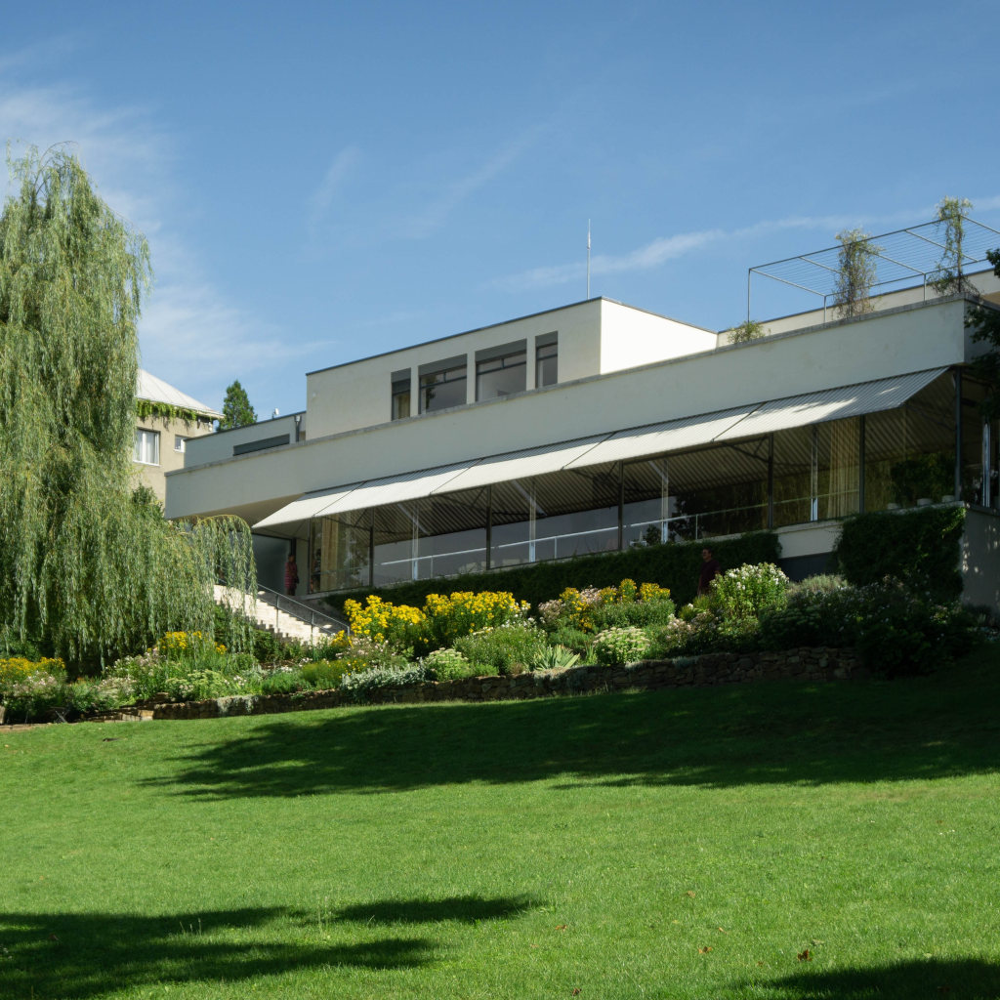

I speak:

Brno, the city I have called home for four years now, has enchanted me with its ideal climate and endless possibilities. I come from a small northern city and I've also experienced the hustle and bustle of a big metropolis, but Brno is the perfect middle ground. The city offers me everything I could ever need, and yet I discover something new every day. Although I have lived here for some time, Brno still surprises and delights me. I appreciate the balance and convenience it brings me, and I have no intention of leaving anytime soon.
If you are in Brno, make sure to visit the following historical sights:|  |
More information about Brno can be found here
Board Game Pub Mystica is my favorite place to hang out with friends. It offers a wide variety of board games and a friendly atmosphere. It's the perfect place for a great night out. I highly recommend it!
Image sources: